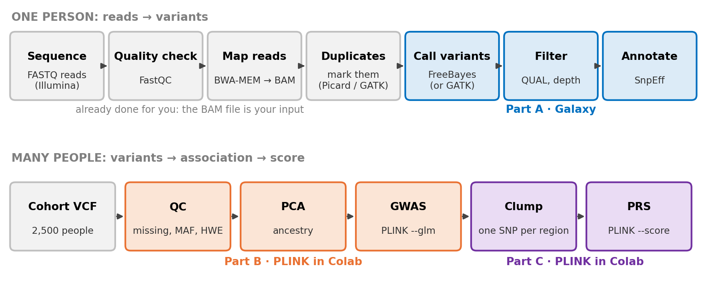
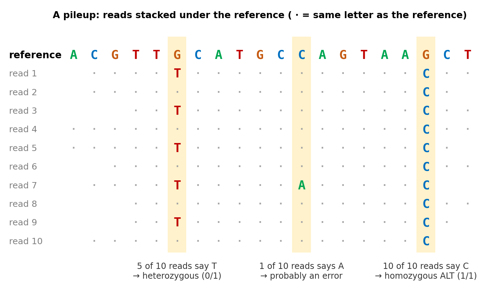
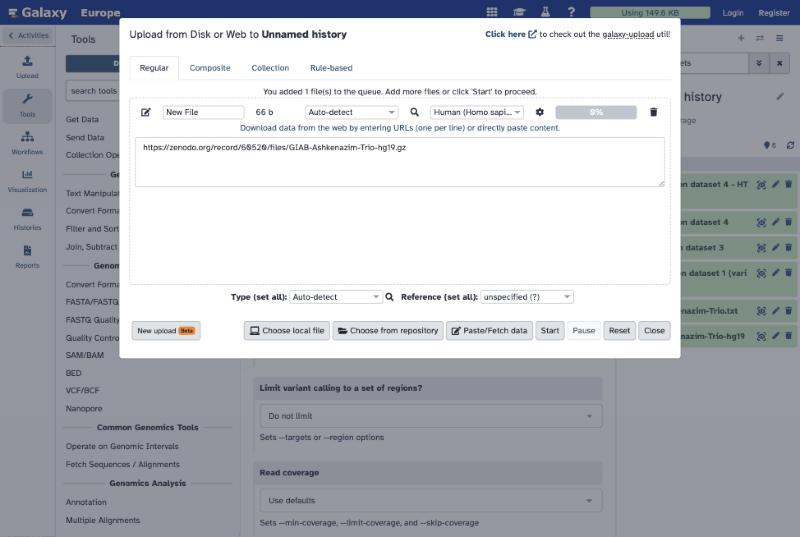
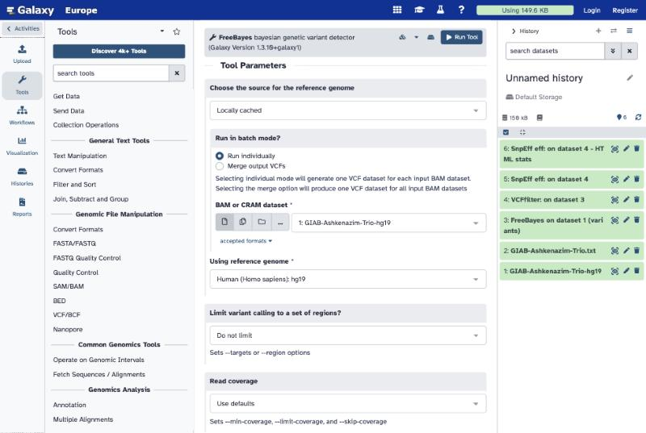
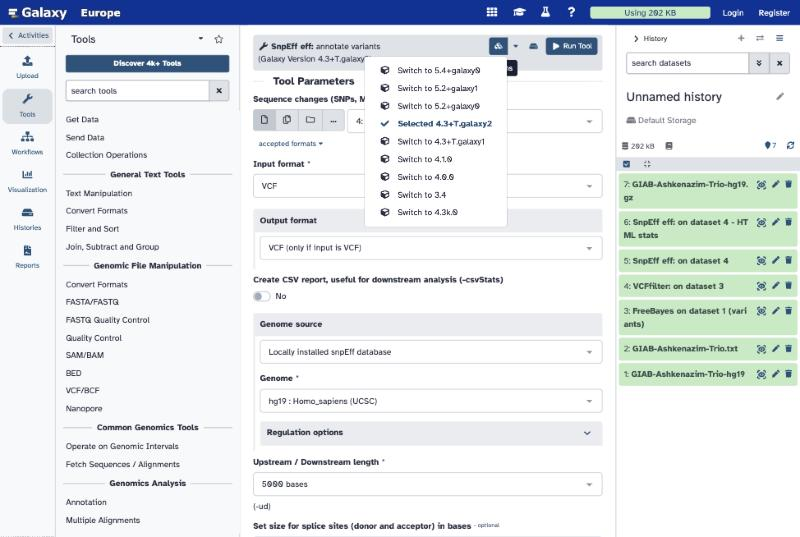
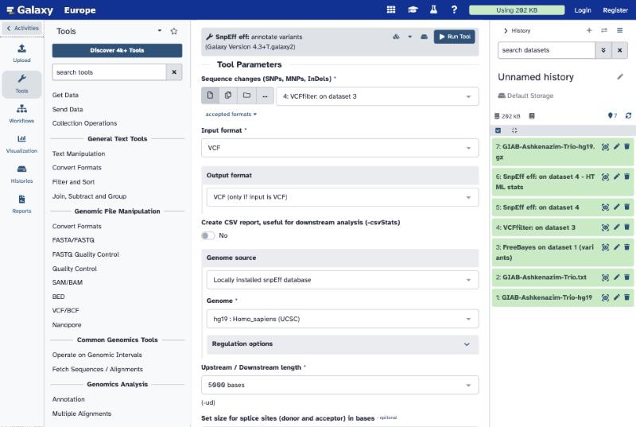

Lab 3 · Discovering genetic variants, GWAS and polygenic scores
Wednesday Oct 21 · about 1 h 45 min · Galaxy + PLINK, no installation
Today you run real pipelines with the tools research labs and hospitals use. Part A runs in Galaxy (a website that runs bioinformatics tools). Parts B and C run PLINK 2 in Google Colab, in a Python or an R notebook — choose one. The handout (Word) explains every concept and every click, and has the report questions Q1–Q8. Report due Tuesday, Oct 27, 11:59 pm on Canvas.

| Part | Question | Tool | Time |
|---|---|---|---|
| A | Which positions in one family’s DNA differ from the reference genome, and do they matter? | Galaxy | ≈ 45 min |
| B | Which variants are associated with LDL cholesterol in 2,500 people? | PLINK 2 in Colab | ≈ 40 min |
| C | Can those variants predict LDL in people who were not in the study? | PLINK 2 in Colab | ≈ 20 min |
Before you start
- Galaxy: go to usegalaxy.org and register (free; top right). If it is slow, usegalaxy.eu has the same tools — the screenshots below come from it.
- Colab: sign in with a Google account.
- Galaxy jobs wait in a queue. Start FreeBayes, then open Part B while it runs, and come back.
Part A · Finding variants in one family (Galaxy)
Data. A real family from Genome in a Bottle (son HG002, father HG003, mother HG004). Their reads are already mapped to hg19 (a BAM file), cut down to a 5,000-letter stretch of chromosome 19 inside the gene POLRMT. From the Galaxy Training Network tutorial Calling variants in diploid systems.

- Upload → Paste/Fetch data, and paste:
https://zenodo.org/record/60520/files/GIAB-Ashkenazim-Trio-hg19.gz - In the box that says unspecified (?), type
hg19and choose Human (Homo sapiens): hg19. - Start, then Close.

You should see: a green dataset, about 52 KB, format bam.
- Search FreeBayes in the tool box.
- Reference genome source: Locally cached · batch mode: Run individually.
- BAM: your dataset 1 · reference: Human (Homo sapiens): hg19. Run Tool.

You should see: a VCF with 39 variant lines below the ## header. Many have QUAL far below 1.
- Search VCFfilter; input: the FreeBayes VCF.
- Insert Filters → Info filter (-f) → value
QUAL > 30 & DP > 10. Run Tool.
You should see: 10 variant lines.
- Search SnpEff eff. Click the Versions icon and choose Switch to 4.3+T.galaxy2 (newer versions lack the hg19 database).
- Input: the VCFfilter output · Genome source: Locally installed snpEff database · Genome: hg19 : Homo_sapiens (UCSC). Run Tool.


You should see: an annotated VCF (each line has an ANN= field) and an HTML report with effects by impact and by type.
Open the annotated VCF. The three person columns are son, father, mother. Fill in the table in the handout (genotype and depth of each person, and the SnpEff effect), and do the Mendelian check: the son’s genotype must be possible from his parents’.
Parts B and C · GWAS and PRS (PLINK 2 in Colab)
Open one notebook, then File → Save a copy in Drive:
Open the Python notebook in Colab Open the R notebook in Colab
For the R notebook: in Colab choose Runtime → Change runtime type → R first.
Data (simulated people, real formats; the notebook downloads it): cohort.vcf.gz (2,500 people × 11,000 variants), pheno.txt (LDL in mg/dL), discovery.txt (2,000 people for the GWAS), target.txt (500 people for the PRS).
| Step | PLINK command (core options) | What it does |
|---|---|---|
| Convert | --vcf cohort.vcf.gz --make-pgen |
VCF text → PLINK binary files |
| QC | --mind 0.02 --geno 0.02 --maf 0.01 --hwe 1e-6 |
drop poor samples, poorly measured variants, rare variants, HW failures |
| PCA | --indep-pairwise 50 5 0.2, then --pca 10 |
summarise ancestry |
| GWAS | --glm, then with --covar pca.eigenvec --covar-name PC1-PC5 |
one regression per variant, without and with ancestry correction |
| Clump | --clump ... --clump-p1 5e-8 --clump-r2 0.1 --clump-kb 250 |
one lead variant per region |
| PRS | --score weights.txt 1 2 3 header --q-score-range ... |
weighted sum of alleles in the 500 target people |
You should see: QC leaves 2,485 people and 10,752 variants · two clusters on the PCA plot · without PCs about 230 hits and λ ≈ 3.9 · with PCs 9 hits in 4 regions and λ ≈ 1.17 · the PRS works best at p < 0.01 (R² ≈ 0.10).
Want to try GATK?
The handout’s appendix shows how to install GATK on your own computer and run the GATK Best Practices pipeline (BWA-MEM → MarkDuplicates → HaplotypeCaller → GenotypeGVCFs → VariantFiltration), including on today’s trio BAM. Optional; not part of the report.